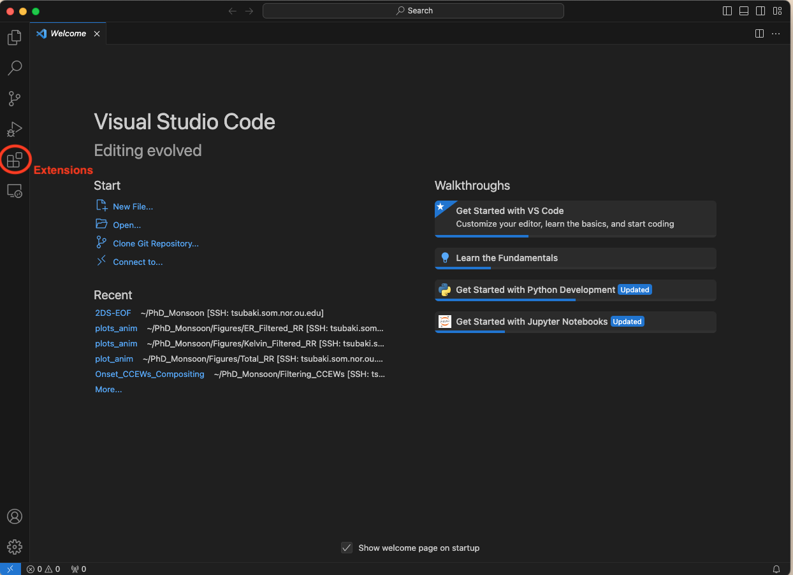
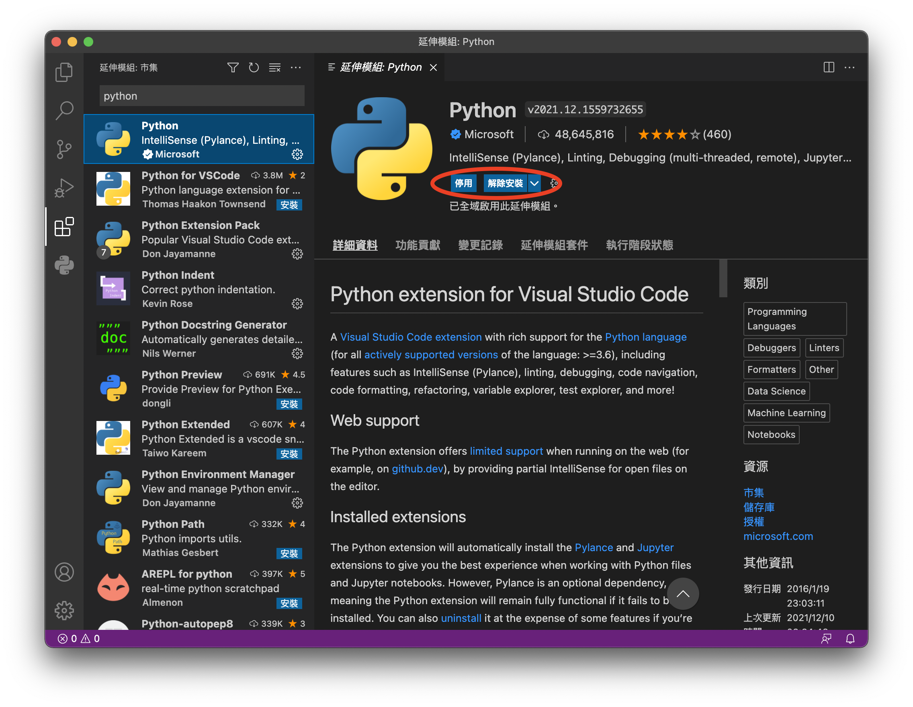
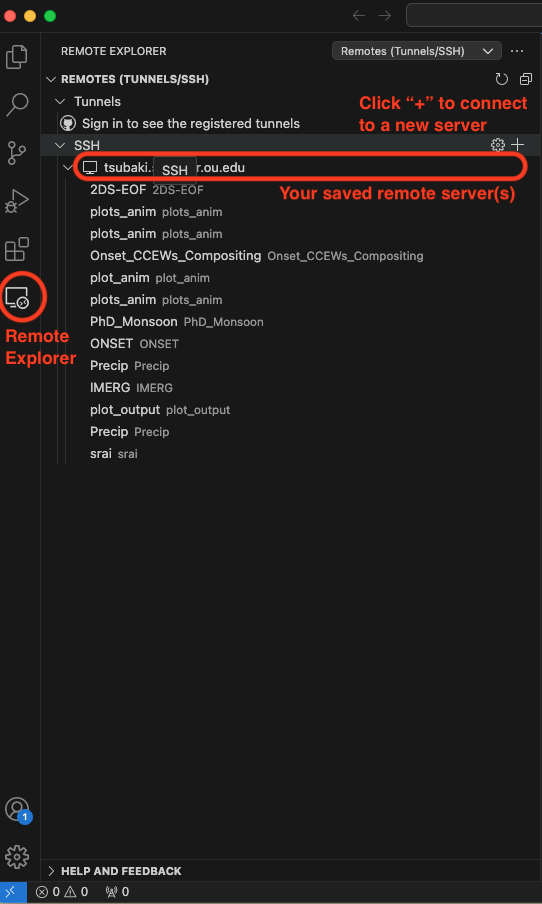
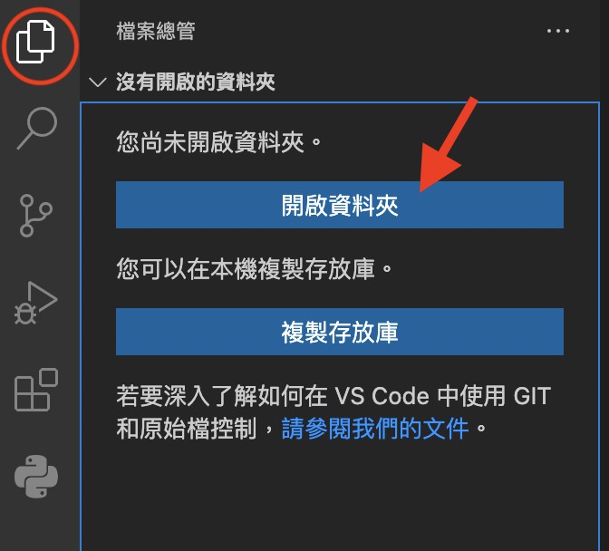
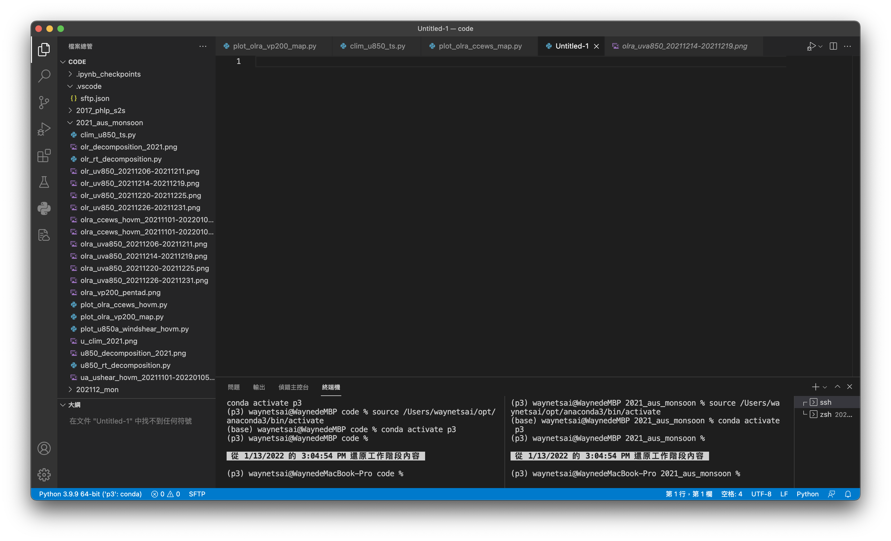

Python Installation and Environment Setup#
In this unit, we will learn how to install Python and packages using Micromamba, and how to use Visual Studio Code (VS Code) to write Python code. The tutorial will be based on MacOS or a remote Linux server.
Installing VS Code#
Visual Studio Code (VS Code) is a free integrated development environment (IDE) developed by Microsoft. VS Code supports writing code on a local computer or a remote server. In this section, we will learn how to install VS Code, add relevant extensions for Python, and start writing code.
First, visit the Visual Studio Code official website to download and install VS Code.
Caution
VSCode is no longer support CentOS version <= 7. For those remote servers with older CentOS version, please install the November 2023 version, and turn off auto updates in VS Code.
For Dr. Sakaeda’s lab, this issue has been resolved. You can now use an updated VSCode version.
After opening VS Code, click on “Extensions” in the sidebar, then search for and install the “Python” extension.


Connecting VS Code to a Remote Server#
First, install the “Remote Development” extension in VS Code. This extension allows you to open any folder on a remote machine using SSH and take advantage of VS Code’s full feature set.

Click “remote explorer” and click “+” to add and connect to a server. Use the following command in the pop-up question box. Type the following command and replace <username> with your actual username:
ssh <username>@tsubaki.som.nor.ou.edu
After entering your password, you should be successfully logged in to the server.
Once connected, click “Open…” to select and open your working directory.

Setting Up SSH Key Authentication for Passwordless Login#
To simplify the login process and avoid entering your password each time you connect to the server, you can set up SSH key authentication. Follow these steps to configure it:
Generate an SSH Key Pair:
Open a terminal on your local machine and run the following command to generate a new SSH key pair:ssh-keygen -t rsa -b 4096 -C "your_email@example.com"
When prompted, you can press Enter to accept the default file location and leave the passphrase blank for convenience. This will create a private and a public key in the ~/.ssh directory.
Copy the Public Key to the Remote Server:
Use the ssh-copy-id command to copy your public key to the remote server: (also execute on the local machine)ssh-copy-id <username>@tsubaki.som.nor.ou.eduEnter your password when prompted. This command appends your public key to the
~/.ssh/authorized_keysfile on the server.
Now you should be able to connect without entering a password.
Installing Micromamba#
Micromamba is a commonly used package manager. To install it, execute the following command in the terminal:
"${SHELL}" <(curl -L micro.mamba.pm/install.sh)
When prompted, you can press Enter to accept the default settings.
Note
Although Conda is also common, Micromamba is more efficient. Additionally, the commands for installing Python packages are essentially the same. Therefore, I recommend using Micromamba instead of Conda.
You can first connect to the remote server using VS Code and then open a terminal within VS Code.
If you use a Mac, you can also install Micromamba in your local directory using the same method.
Installing PyAOS Packages#
After installing Micromamba, open a terminal. You will see (base) in the prompt because Micromamba installs some basic packages, and the default environment is named base. However, the base environment is not sufficient for PyAOS computations. Therefore, we need to create a new environment for PyAOS. The following command includes the installation processes and a list of the packages that will be used in this workshop. Please copy the command, paste it into the terminal, and execute it.
micromamba create -n p3 -c conda-forge ipython numpy metpy scipy netCDF4 cfgrib matplotlib eofs xeofs cartopy nco cdo python-cdo xarray cfgrib pandas seaborn cmaps scikit-learn dask bottleneck jupyter notebook pip bpytop flox esmpy xesmf python=3.10
Caution
Always re-create the Micromamba environment by executing the above command when installing or updating libraries to avoid version conflicts.
Note
p3 is the name of the new micromamba environment. You are welcome to rename it.
Then activate the p3 encironment by executing
micromamba activate p3
Writing Code with VS Code#
There are two common types of script files you can write:
.pyis a Python script file. Python will execute the entire script line by line..ipynbis a Jupyter Notebook format. It provides an interactive interface where code is separated into cells, and each cell can be executed independently. Variables defined in one cell can be used in other cells.
To start writing code, open a working folder in “Explorer.”
Right-click (or double-click on Mac) in the Explorer pane to create a new file. Make sure to specify the file extension as .py or .ipynb.

Writing a Test Code#
Example 1: Import xarray and print its version.
First, create a new file named test.py or test.ipynb, then copy and paste the following code into it.
import xarray as xr
print('Xarray version: ' + xr.__version__)
Xarray version: 2025.1.2
To run the script, follow these steps:
For Python Scripts (.py):
In VS Code, navigate to the top menu and click on “Run”.
Select “Run Without Debugging” from the dropdown menu. This will execute your script without entering debug mode.
Alternatively, you can use the shortcut Ctrl + F5 (Windows/Linux) or Cmd + F5 (Mac) to run the script quickly.
For Jupyter Notebooks (.ipynb):
Click on the “▷” play button located on the left side of the Jupyter Notebook cell to run the specific cell.
If this is the first time running a Jupyter Notebook in this environment, you may be prompted to select a Python kernel. Choose the
p3Python kernel that we just installed.You can run all cells sequentially by clicking “Run All Cells” in the toolbar at the top.
By following these steps, you’ll be able to execute your test code and see the output directly in the terminal or notebook interface.
Checking Package Versions#
To avoid compatibility issues, it is recommended to check the versions of the packages before starting. Example 1 in this chapter demonstrates how to check package versions in Python. The version is stored in the __version__ attribute, so you can print it to check.
import xarray as xr
import numpy as np
import cartopy
print("Xarray version: " + xr.__version__)
print("Numpy version: " + np.__version__)
print("Cartopy version: " + cartopy.__version__)
Xarray version: 2025.1.2
Numpy version: 2.1.3
Cartopy version: 0.24.0
Summary#
For convenience, this guide focuses only on writing and executing Python scripts or Jupyter Notebooks using Micromamba and VS Code. There are many other tools available for coding, but with the computation environment set up, we are now ready to start learning how to write code for PyAOS analysis!